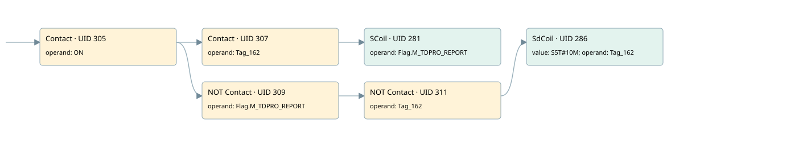

send report every 10 minutes
allarm manager · 검색 색인 순서 8 · 원본 내부 NID 추정 6
백업 PLF 원본의 2646785 바이트 위치에서 복원한 XML. 검색 문서 934의 객체 키 161022007c0f000000000000와 연결했다. 이름 해석 7/7개. 남은 RefId는 상수 또는 미해석 참조다.
연결 구조 다시 그리기
원본 Part/PCon/Wire를 이용한 연결도다. TIA 화면의 래더 배치 또는 실행 결과를 재현한 그림은 아니다. 핀 연결은 아래 표와 원본 XML을 기준으로 읽는다. 노드 위에 마우스를 두면 피연산자 이름을 볼 수 있다.

접점·코일·블록과 피연산자
| Part UID | Gate | Negated 핀 | 연결 피연산자 |
|---|---|---|---|
| 305 | Contact | operand = ON | |
| 307 | Contact | operand = Tag_162 | |
| 281 | SCoil | operand = Flag.M_TDPRO_REPORT | |
| 309 | Contact | operand | operand = Flag.M_TDPRO_REPORT |
| 311 | Contact | operand | operand = Tag_162 |
| 286 | SdCoil | value = S5T#10M; operand = Tag_162 |
접점 경로를 펼친 조건식
Contact·O/A·비교기의 원본 연결을 읽기 쉽게 펼친 보조 해석이다. POWER는 전원 레일 시작을 뜻한다. 호출 블록·에지·타이머의 내부 동작과 다중 쓰기 순서는 이 표로 실행 검증하지 않았다. 미해석 핀과 RefId는 원문 연결표에서 확인한다.
| UID | 동작 | 대상 | 원본 접점 경로 | 내용 |
|---|---|---|---|---|
| 281 | SCoil | Flag.M_TDPRO_REPORT | (ON AND Tag_162) | 조건 성립 시 Set |
| 286 | SdCoil | Tag_162 | ((ON AND NOT [Flag.M_TDPRO_REPORT]) AND NOT [Tag_162]) | 시간 동작 SdCoil; 타이머 의미 추가 확인 / 시간 인자 S5T#10M |
원본 배선 연결
| Wire UID | 동일 Wire 연결 끝점 |
|---|---|
| 313 | Powerrail {} ↔ Part 305.in |
| 295 | ORef 288 (ON) ↔ Part 305.operand |
| 306 | Part 305.out ↔ Part 307.in ↔ Part 309.in |
| 296 | ORef 289 (Tag_162) ↔ Part 307.operand |
| 308 | Part 307.out ↔ Part 281.in |
| 298 | ORef 290 (Flag.M_TDPRO_REPORT) ↔ Part 281.operand |
| 300 | ORef 292 (Flag.M_TDPRO_REPORT) ↔ Part 309.operand |
| 310 | Part 309.out ↔ Part 311.in |
| 301 | ORef 293 (Tag_162) ↔ Part 311.operand |
| 312 | Part 311.out ↔ Part 286.in |
| 299 | ORef 291 (S5T#10M) ↔ Part 286.value |
| 303 | ORef 294 (Tag_162) ↔ Part 286.operand |
식별자 해석 근거 7개
| ORef UID | RefId | 이름 | IdentXmlPart 파일 | 해석 방법 |
|---|---|---|---|---|
| 288 | 46 | ON | 0567-IdentXmlPart.xml | UID/RID + search-text + NID agreement |
| 289 | 47 | Tag_162 | 0567-IdentXmlPart.xml | UID/RID + search-text + NID agreement |
| 290 | 48 | Flag.M_TDPRO_REPORT | 0565-IdentXmlPart.xml | UID/RID + search-text + NID agreement |
| 292 | 48 | Flag.M_TDPRO_REPORT | 0565-IdentXmlPart.xml | UID/RID + search-text + NID agreement |
| 293 | 47 | Tag_162 | 0567-IdentXmlPart.xml | UID/RID + search-text + NID agreement |
| 294 | 47 | Tag_162 | 0567-IdentXmlPart.xml | UID/RID + search-text + NID agreement |
| 291 | 49 | S5T#10M | 0566-IdentXmlPart.xml | literal candidate: UID/RID/NID + nearby named declarations + search-text agreement |
검색 코드 보조 자료
참조 명칭을 찾기 위한 자료이며 실행 순서나 AND/OR 관계는 위 연결표로 확인한다.
"on" "tag_162" "flag".m_tdpro_report "flag".m_tdpro_report "tag_162" "tag_162" s5t#10m